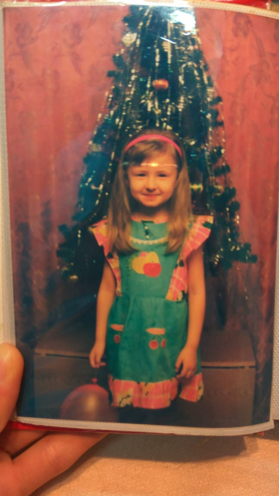
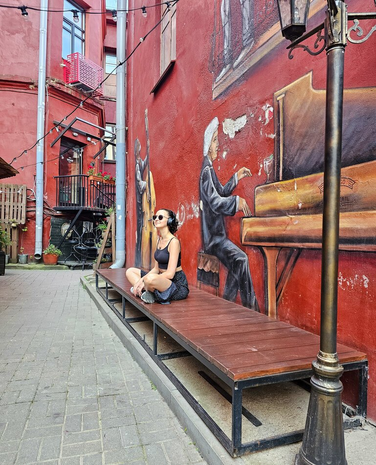

Кто такие миллениалы и когда они родились
Если ты родился примерно с 1981 по 1996 год, тебя обычно относят к поколению Y — миллениалам. В России границы нередко расширяют: у тех, кто появился на свет ближе к началу нулевых, мог быть очень похожий опыт перемен, тревоги и взросления.
Это поколение часто называют поколением психотерапии. Не потому, что с ним «что-то не так», а потому, что оно стало заметнее говорить о чувствах, усталости и сложностях в отношениях. Пойти за поддержкой, чтобы лучше понять себя, — не слабость и не модный проект. Это способ не оставаться со всем в одиночку.
Детство между двумя мирами: фундамент твоей личности
Твоё детство могло пройти во дворах, с видеокассетами и домашними телефонами, а подростковый возраст — уже с первыми чатами, мобильниками и интернетом. Ты застал переход: от привычной, медленной жизни к миру, который стал быстрее, громче и постоянно требует быть на связи.
Взрослые рядом тоже не всегда знали, как ориентироваться. Их опыт мог не давать понятного ответа на новые условия. Поэтому многим миллениалам знакомы одновременно гибкость и тревога: ты умеешь приспосабливаться, но очень ищешь устойчивость.

Травмы привязанности и эхо 90-ых
Многие родители в девяностые были заняты тем, чтобы удержать семью на плаву. На эмоциональную близость иногда просто не оставалось сил, а привычки говорить о чувствах у взрослых могло и не быть. Ребёнок мог сделать свой вывод: лучше не беспокоить, справляться самому и не просить слишком многого.
Во взрослом возрасте это иногда звучит как постоянная настороженность, страх быть оставленным или, наоборот, привычка держать дистанцию. Ещё — умение угадывать настроение других и трудность признать: «Мне сейчас нужна помощь».
Гиперответственность и двойной долг
Ты умеешь решать задачи, выдерживать нагрузку и собираться в сложный момент. Но эта сила может превращаться в ловушку, если отдых кажется чем-то, что нужно заслужить. Внутри нередко живёт двойная задача: оправдать усилия родителей и одновременно стать для своих детей безупречным взрослым.
Невозможно постоянно соответствовать обеим ролям и не уставать. Когда собственные желания слишком долго отложены, появляется пустота, раздражение или ощущение, что ты всё время «недостаточно» хороший, успешный, внимательный.
Работа, карьера и кризис самоопределения
Для многих миллениалов работа — не только зарплата. Хочется видеть в ней смысл, совпадение с ценностями и место для жизни за пределами задач. Но профессии и рынки меняются быстро, а обещание стабильной траектории всё меньше похоже на реальность.
Отсюда постоянное обучение, смена направлений и вопрос: «Я точно иду туда?» Это не обязательно признак лени или непостоянства. Скорее, попытка найти опору там, где старые сценарии уже не работают, а новые ещё не стали ясными.
Отношения, семья и феномен одиночества
Можно быть в десятках чатов, иметь подписчиков и партнёра рядом — и всё же чувствовать себя одиноко. Часто хочется не просто общения, а связи, в которой можно быть честным: с тревогой, сомнениями, усталостью и надеждой.
Желание построить семью «правильно» тоже иногда давит. Ты можешь откладывать решение не из-за отсутствия ответственности, а потому что очень не хочешь повторять болезненный опыт. Но идеальных отношений и идеальных родителей не бывает: близость строится не без ошибок, а через возможность замечать их и восстанавливать контакт.

Почему миллениалы выбирают психотерапию
Терапия — не ремонт «сломанного» человека и не ещё одна задача по улучшению себя. Это время, где можно остановиться, отличить свои желания от чужих ожиданий и заметить, на что ты уже опираешься. В том числе — разрешить себе не быть всё время сильным.
Семейный психолог онлайн может помочь разобраться в том, как прошлый опыт влияет на отношения сейчас: почему трудно просить, доверять, выдерживать конфликт или оставаться рядом. Онлайн-формат позволяет делать это из привычного пространства, без дороги и лишней суеты.
Важно: текст описывает распространённые переживания, а не ставит диагноз и не объясняет каждого человека через поколенческий ярлык. Если тебе тяжело, поддержка может быть полезна независимо от года рождения.